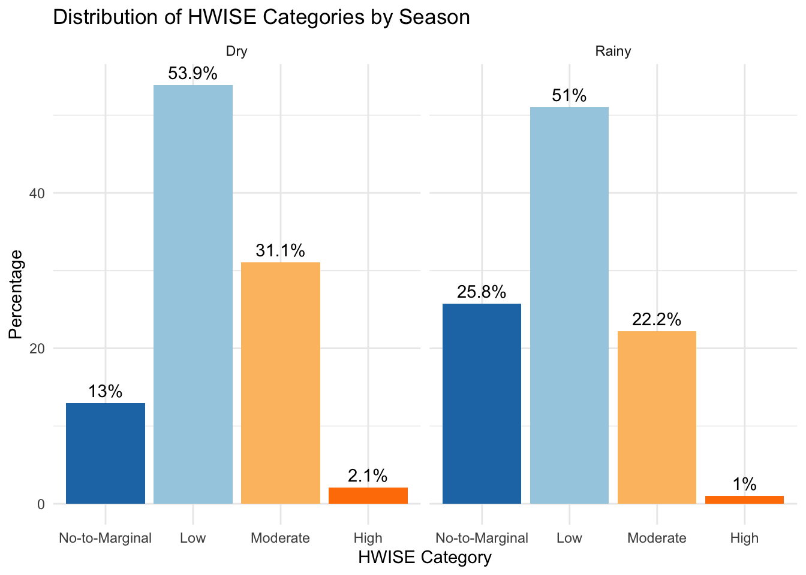
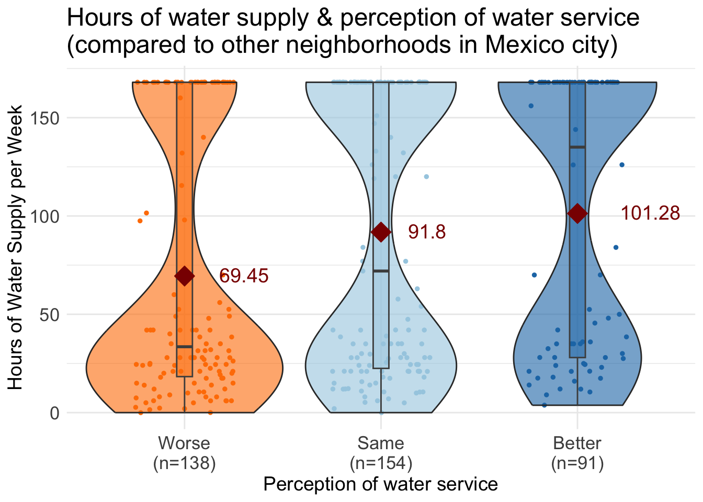
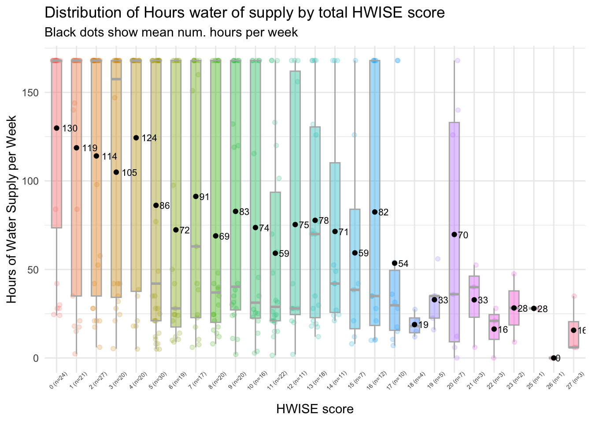
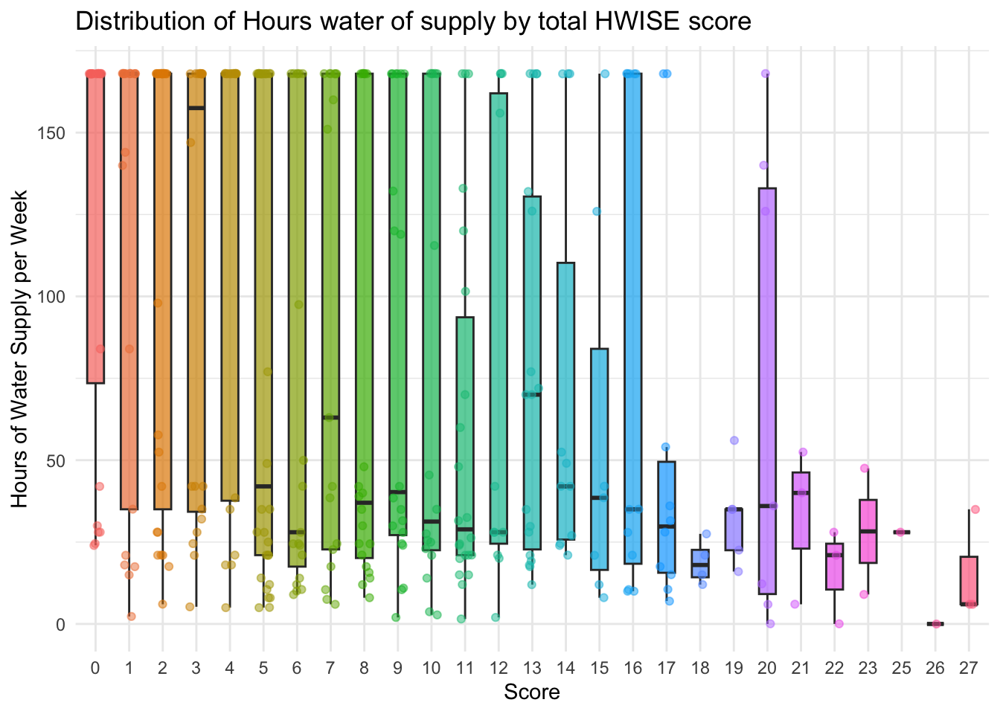
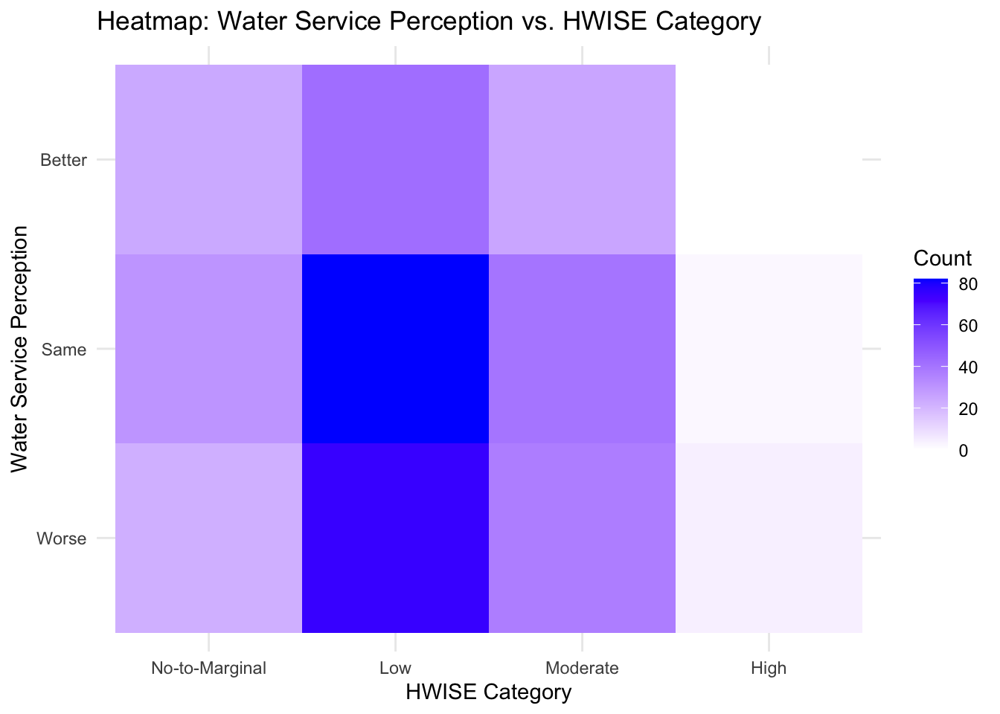
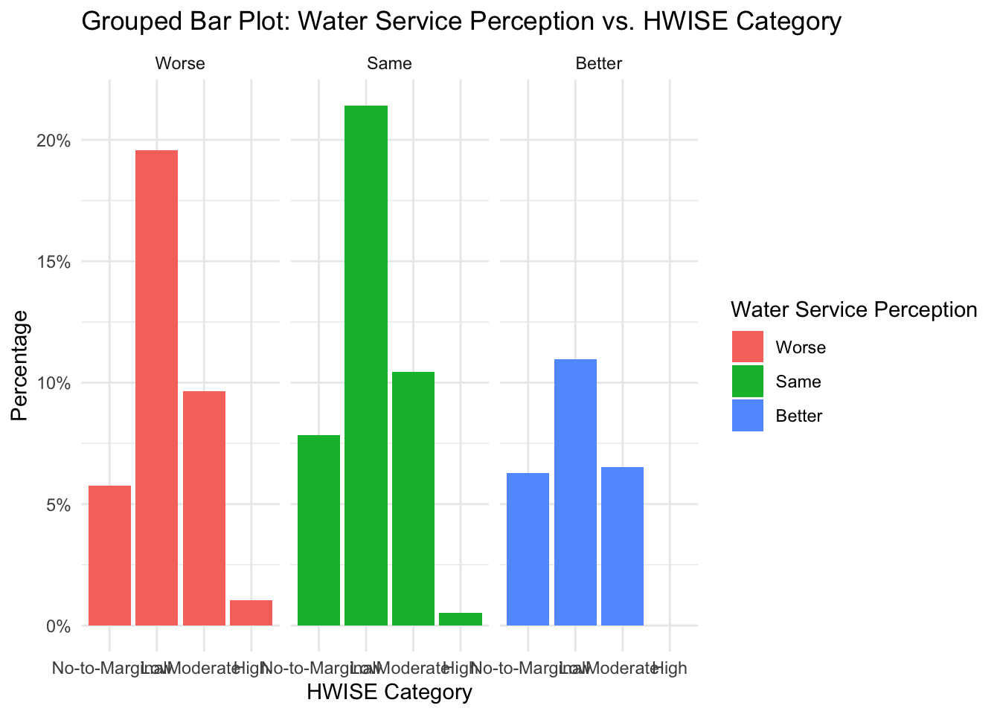

HBA2025_results
Paloma
2025-01-27
Last updated: 2025-03-08
Checks: 6 1
Knit directory: QUAIL-Mex/
This reproducible R Markdown analysis was created with workflowr (version 1.7.1). The Checks tab describes the reproducibility checks that were applied when the results were created. The Past versions tab lists the development history.
The R Markdown file has unstaged changes. To know which version of
the R Markdown file created these results, you’ll want to first commit
it to the Git repo. If you’re still working on the analysis, you can
ignore this warning. When you’re finished, you can run
wflow_publish to commit the R Markdown file and build the
HTML.
Great job! The global environment was empty. Objects defined in the global environment can affect the analysis in your R Markdown file in unknown ways. For reproduciblity it’s best to always run the code in an empty environment.
The command set.seed(20241009) was run prior to running
the code in the R Markdown file. Setting a seed ensures that any results
that rely on randomness, e.g. subsampling or permutations, are
reproducible.
Great job! Recording the operating system, R version, and package versions is critical for reproducibility.
Nice! There were no cached chunks for this analysis, so you can be confident that you successfully produced the results during this run.
Great job! Using relative paths to the files within your workflowr project makes it easier to run your code on other machines.
Great! You are using Git for version control. Tracking code development and connecting the code version to the results is critical for reproducibility.
The results in this page were generated with repository version 8cdddab. See the Past versions tab to see a history of the changes made to the R Markdown and HTML files.
Note that you need to be careful to ensure that all relevant files for
the analysis have been committed to Git prior to generating the results
(you can use wflow_publish or
wflow_git_commit). workflowr only checks the R Markdown
file, but you know if there are other scripts or data files that it
depends on. Below is the status of the Git repository when the results
were generated:
Ignored files:
Ignored: .DS_Store
Ignored: .RData
Ignored: .Rhistory
Ignored: .Rproj.user/
Ignored: analysis/.DS_Store
Ignored: analysis/.RData
Ignored: analysis/.Rhistory
Ignored: analysis/Hrs_by_HWISE score.png
Ignored: code/.DS_Store
Ignored: data/.DS_Store
Untracked files:
Untracked: analysis/tests.Rmd
Unstaged changes:
Modified: analysis/HBA2025_Analyses.Rmd
Modified: data/Cleaned_Dataset_Screening_HWISE_PSS_V3.csv
Modified: data/Q8-26-28.csv
Note that any generated files, e.g. HTML, png, CSS, etc., are not included in this status report because it is ok for generated content to have uncommitted changes.
These are the previous versions of the repository in which changes were
made to the R Markdown (analysis/HBA2025_Analyses.Rmd) and
HTML (docs/HBA2025_Analyses.html) files. If you’ve
configured a remote Git repository (see ?wflow_git_remote),
click on the hyperlinks in the table below to view the files as they
were in that past version.
| File | Version | Author | Date | Message |
|---|---|---|---|---|
| Rmd | 8cdddab | Paloma | 2025-03-08 | updated plots |
| html | 8cdddab | Paloma | 2025-03-08 | updated plots |
| Rmd | 77cc174 | Paloma | 2025-03-08 | more plots |
| html | 77cc174 | Paloma | 2025-03-08 | more plots |
| Rmd | 7866aba | Paloma | 2025-03-07 | newplots |
| html | 7866aba | Paloma | 2025-03-07 | newplots |
| Rmd | 3704a5a | Paloma | 2025-03-04 | add more vars |
| html | 3704a5a | Paloma | 2025-03-04 | add more vars |
Introduction
Here you will find the code used to obtain results shown in the annual meeting of the HBA, 2025.
Abstract:
Coping with water insecurity: women’s strategies and emotional responses in Iztapalapa, Mexico City
Water insecurity in urban areas presents distinctive challenges, particularly in marginalized communities. While past studies have documented how households adapt to poor water services, many of these coping strategies come at a significant personal cost. Here we examine the coping strategies and emotional impacts of unreliable water services among 400 women in Iztapalapa, Mexico City. Data were collected through surveys over the Fall of 2022 and Spring of 2023. We assessed household water access, water management practices, and emotional responses to local water services.
Results indicate that during acute water shortages, women can spend extended periods (several hours, or sometimes days) waiting for water trucks. Additionally, 57% of respondents reported feeling frustrated or angry about their water situation, while around 20% experienced family conflicts over water use or community-level conflicts around water management, often involving water vendors or government services.
This study offers one of the first in-depth examinations of how water insecurity specifically affects women in Iztapalapa, a densely populated region of Mexico City with severe water access challenges. The findings highlight the urgent need for policy interventions that address water insecurity with a gender-sensitive approach, recognizing the disproportionate burden placed on women as primary water managers in their households.
HWISE ordinal categories
Frongillo et al. 2024 reports that total HWISE scores can be associated with four ordinal categories that predict level of dissatisfaction about water service. This water insecurity categorization has four levels.
0 - 2 = “No-to-Marginal”,
3 - 11 = “Low”,
12 - 23 = “Moderate”,
24 - 36 = “High”
Min. 1st Qu. Median Mean 3rd Qu. Max. NA's
0.000 3.000 8.000 8.419 12.000 27.000 11
No-to-Marginal Low Moderate High
76 205 104 6 
Comparing rainy and dry season

HWISE score summary, dry season Min. 1st Qu. Median Mean 3rd Qu. Max. NA's
0.000 5.000 9.000 9.715 14.000 27.000 6 HWISE score summary, rainy season Min. 1st Qu. Median Mean 3rd Qu. Max. NA's
0.000 2.000 6.000 7.157 11.000 27.000 8 Water insecurity categories, dry season
No-to-Marginal Low Moderate High
25 104 60 4 Water insecurity categories, rainy season
No-to-Marginal Low Moderate High
51 101 44 2 Plot seasonal change

Distribution hours of water supply by category

Perception w/respect to water supply in the City
We asked participants if they consider their own water service as worse, same or better than in other parts of Mexico City
| Version | Author | Date |
|---|---|---|
| 7866aba | Paloma | 2025-03-07 |
Hours of water supply by group

Hours of water supply by HWISE score
Boxplots including mean values 
Boxplots not including mean values
# Generate boxplots
ggplot(data_long, aes(x = as.factor(Response), y = HRS_WEEK, fill = as.factor(Response))) +
geom_boxplot(outlier.shape = NA, width = 0.5, alpha = 0.7) + # Thinner boxes
geom_jitter(aes(color = as.factor(Response)), size = 1.5, width = 0.2, alpha = 0.5) +
theme_minimal() +
labs(title = "Distribution of Hours water of supply by total HWISE score",
x = "Score",
y = "Hours of Water Supply per Week") +
# scale_fill_manual(values = color_palette) + # Custom colors for boxes
# scale_color_manual(values = color_palette) + # Custom colors for points
theme(legend.position = "none")# + # Remove legend for clarity
HWISE categories and Perception of own water supply
Stacked bar plot
Grouped bar plots

Heatmap

data <- read.csv(file.path(data_path, "Cleaned_Dataset_Screening_HWISE_PSS_V3.csv"),
stringsAsFactors = FALSE,
na.strings = c("", "N/A", "NA", "pending"))
data <- data %>%
select(-HW_TOTAL)
# Identify all HW_ variables
hw_vars <- grep("^HW_", names(data), value = TRUE)
# Filter relevant columns (HW_ questions and HRS_WEEK)
data_long <- data %>%
select(all_of(hw_vars), HRS_WEEK) %>%
pivot_longer(cols = all_of(hw_vars), names_to = "HW_Question", values_to = "Response") %>%
filter(!is.na(HRS_WEEK), !is.na(Response)) # Remove NAs
# Generate heatmaps using facet_wrap to create one per HW_ question
ggplot(data_long, aes(x = Response, y = HRS_WEEK, fill = ..count..)) +
geom_tile(stat = "bin2d", bins = 30) + # Heatmap using binning
scale_fill_gradient(low = "white", high = "red") + # Color scale for counts
labs(title = "Heatmaps of HW_ Questions vs. Hours of Water Supply",
x = "HW_ Question Response",
y = "Hours of Water Supply per Week",
fill = "Count") +
theme_minimal() +
facet_wrap(~HW_Question, scales = "free_x") # Separate heatmaps for each HW_ questionWarning: The dot-dot notation (`..count..`) was deprecated in ggplot2 3.4.0.
ℹ Please use `after_stat(count)` instead.
This warning is displayed once every 8 hours.
Call `lifecycle::last_lifecycle_warnings()` to see where this warning was
generated.data <- read.csv(file.path(data_path, "Cleaned_Dataset_Screening_HWISE_PSS_V3.csv"),
stringsAsFactors = FALSE,
na.strings = c("", "N/A", "NA", "pending"))
# Create categories
data <- data %>%
mutate(MX8_TRUST_CAT = case_when(
MX8_TRUST == "0" ~ "Yes",
MX8_TRUST == "1" ~ "Neutral",
MX8_TRUST == "2" ~ "No",
TRUE ~ NA_character_ # Assign NA for missing or out-of-range values
))
# Convert Season_Type to a factor
data$MX8_TRUST_CAT <- factor(data$MX8_TRUST_CAT, levels = c("Yes", "Neutral", "No"))
# Select relevant columns (HW_ questions + MX8_TRUST)
data_long <- data %>%
select(all_of(hw_vars), MX8_TRUST_CAT) %>%
pivot_longer(cols = all_of(hw_vars), names_to = "HW_Question", values_to = "Response") %>%
filter(!is.na(MX8_TRUST_CAT), !is.na(Response)) # Remove NAsggplot(data_long, aes(x = Response, fill = MX8_TRUST_CAT)) +
geom_bar(position = "fill") + # "fill" makes bars proportional
facet_wrap(~HW_Question, scales = "free_x") + # Create separate plots for each HW_ question
labs(title = "Trust in Tap Water by HW_ Questions",
x = "Response to HW_ Question",
y = "Proportion",
fill = "Trust in Tap Water") +
theme_minimal() +
scale_y_continuous(labels = scales::percent_format(scale = 1))ggplot(data_long, aes(x = Response, fill = MX8_TRUST_CAT)) +
geom_bar(position = "dodge") + # "dodge" places bars side by side
facet_wrap(~HW_Question, scales = "free_x") +
labs(title = "Trust in Tap Water by HW_ Questions",
x = "Response to HW_ Question",
y = "Count",
fill = "Trust in Tap Water") +
theme_minimal()# Create a contingency table
table_data <- as.data.frame(table(data_long$Response, data_long$MX8_TRUST_CAT, data_long$HW_Question))
colnames(table_data) <- c("Response", "MX8_TRUST", "HW_Question", "Count")
# Generate heatmap
ggplot(table_data, aes(x = Response, y = MX8_TRUST, fill = Count)) +
geom_tile() +
scale_fill_gradient(low = "white", high = "blue") +
facet_wrap(~HW_Question, scales = "free_x") +
labs(title = "Heatmap of Trust in Tap Water by HW_ Questions",
x = "Response to HW_ Question",
y = "Trust in Tap Water",
fill = "Count") +
theme_minimal()
sessionInfo()R version 4.4.3 (2025-02-28)
Platform: aarch64-apple-darwin20
Running under: macOS Sequoia 15.3.1
Matrix products: default
BLAS: /Library/Frameworks/R.framework/Versions/4.4-arm64/Resources/lib/libRblas.0.dylib
LAPACK: /Library/Frameworks/R.framework/Versions/4.4-arm64/Resources/lib/libRlapack.dylib; LAPACK version 3.12.0
locale:
[1] en_US.UTF-8/en_US.UTF-8/en_US.UTF-8/C/en_US.UTF-8/en_US.UTF-8
time zone: America/Detroit
tzcode source: internal
attached base packages:
[1] stats graphics grDevices utils datasets methods base
other attached packages:
[1] knitr_1.49 reshape2_1.4.4 tidyr_1.3.1 ggplot2_3.5.1 dplyr_1.1.4
loaded via a namespace (and not attached):
[1] sass_0.4.9 utf8_1.2.4 generics_0.1.3 stringi_1.8.4
[5] digest_0.6.37 magrittr_2.0.3 evaluate_1.0.1 grid_4.4.3
[9] fastmap_1.2.0 rprojroot_2.0.4 workflowr_1.7.1 plyr_1.8.9
[13] jsonlite_1.8.9 whisker_0.4.1 promises_1.3.0 purrr_1.0.2
[17] fansi_1.0.6 scales_1.3.0 jquerylib_0.1.4 cli_3.6.3
[21] rlang_1.1.4 crayon_1.5.3 munsell_0.5.1 withr_3.0.2
[25] cachem_1.1.0 yaml_2.3.10 tools_4.4.3 colorspace_2.1-1
[29] httpuv_1.6.15 vctrs_0.6.5 R6_2.5.1 lifecycle_1.0.4
[33] git2r_0.35.0 stringr_1.5.1 fs_1.6.5 pkgconfig_2.0.3
[37] pillar_1.9.0 bslib_0.8.0 later_1.3.2 gtable_0.3.6
[41] glue_1.8.0 Rcpp_1.0.13-1 xfun_0.49 tibble_3.2.1
[45] tidyselect_1.2.1 rstudioapi_0.17.1 farver_2.1.2 htmltools_0.5.8.1
[49] rmarkdown_2.29 labeling_0.4.3 compiler_4.4.3